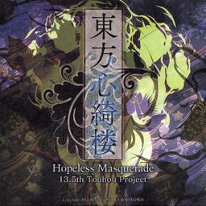

- Welcome to Touhou Wiki!
- Please register to edit. For assistance, check in with our Discord server or IRC channel.
Hopeless Masquerade
Hopeless Masquerade | |
|---|---|
|
 | |
| Developer | |
| Publisher | |
| Released |
Trial: December 30, 2012 (Comiket 83) |
| Genre |
Competitive Fighting Game |
| Platforms | |
| Requirements |
|
Touhou
Contents
Gameplay[edit]
Hopeless Masquerade is a one-on-one aerial fighter with no ground combat. Characters fight one another by using standard attacks (melee and special attacks), skills, and spell cards. Each character features a unique fighting style. Spell cards, skill cards, and items are "declared" by inputting a particular button combination. Certain skills will behave differently depending on what direction you map it to - for example, Ichirin Kumoi's laser attack will angle upwards or downwards if the skill is set to an up slot or a down slot, respectively. Each skill, spell, and item adds a single "point" to one of the three faiths, Shinto (神), Taoism (道) or Buddhism (仏). If one's faith gathers a total of 4 "points", the character's bullets will behave differently:
- Shinto specializes in shooting range. It features more bullets with better homing and attack area, but the bullets can be easily destroyed by other bullets or grazing.
- Taoism specializes in shooting speed. Its bullets are faster, have better penetration, and are harder to be grazed, but they are smaller and have less spread.
- Buddhism specializes in close combat. Its bullets are larger, and stun opponents for longer, but have worse range.
The game also introduces the "popularity system". Each character in combat has a popularity meter shown in the corner of the screen, with a percentage underneath the health bars. While fighting, certain attacks and spells will raise the attacker's popularity, while being hit may decrease it. One may initiate a Last Word by getting up to 100% popularity and inputting a specific button combination. In addition, each character has a stun meter similar to the one seen in Scarlet Weather Rhapsody and Touhou Hisoutensoku. Each character has a different amount, and it allows them to use stronger skills and spell cards. Each character also has an extra, unique mechanic, represented by an icon next to their stun meter, which gives the character certain advantages.
Concept[edit]
The game features a different style of two-dimensional sprites compared to earlier versus fighting games within the series. It is also the first game in the official series to have a native resolution of 1280×720. According to Twilight Frontier, the entire game is being built from scratch rather than reusing the engines from the previous fighting games.[2] The character's portraits were done by alphes. As is popular for fighting games in recent years, stages use fully 3 dimensional backgrounds. As of the web trial release, the game also includes netplay.
The English title of the game refers to the in-game plot in which the humans of Gensokyo have descended into a state of hopelessness, while the "masquerade" refers to the final boss of the game, Hata no Kokoro, being a youkai of masks. Her given name "Kokoro" also refers to the Japanese part of the title, which includes the kanji 心 (kokoro), meaning heart.
Story[edit]
Setting[edit]
The game's prologue says the Human Village is the main focus of the game, and is included as a selectable stage. Besides that, several other locations are playable as a stage. These include the Hakurei Shrine and the Palanquin Ship. On a particular unusual note, both the ship and Myouren Temple are both selectable despite one becoming the other after Undefined Fantastic Object.
Characters[edit]
The game features the following returning playable characters: Marisa Kirisame, Reimu Hakurei, Ichirin Kumoi, Byakuren Hijiri, Mononobe no Futo, Toyosatomimi no Miko, Nitori Kawashiro, Koishi Komeiji, and Mamizou Futatsuiwa. Hata no Kokoro is a new character and the final boss of the game. Besides that, many other characters from previous works are featured as background characters.
Plot[edit]
In the wake of so many incidents beyond their control, the Human Village has fallen into a state of hopeless pessimism. Believing that religion can restore order, some of Gensokyo's most prominent adherents of Buddhism, Taoism and Shinto all want to take this chance to expand their particular faith's influence.
Music[edit]
The game holds a total of nineteen tracks, mainly consisting of character themes; all are included on the official OST. Most themes of the returning characters are arranged by U2 Akiyama. ZUN made two tracks for the game; one is "Futatsuiwa from Gensokyo", being an arrangement of "Futatsuiwa from Sado" from Ten Desires and the other is Hata no Kokoro's theme "The Lost Emotion". The song that plays during the intro is based off of "Theme of Eastern Story", elements of which are also present in the post-battle theme and character select theme. Some tracks incorporate live-recorded instruments, including violin, cello, guitar, flute and clarinet.
Press[edit]
On October 5, 2012, the main page of the game was released to public by Twilight Frontier. It includes the main logo, a short introduction to the story, and development screenshots of Reimu Hakurei and Marisa Kirisame. Later on, ZUN tweeted about the project on his Twitter. [3] He also mentioned in the October 10th, 2012 episode of Nikenme Radio that Twilight Frontier will release the game at Comiket 83. No further details were added, though. A month later, on November 3, 2012, a trailer depicting a match between Reimu Hakurei and Marisa Kirisame was released onto YouTube. The description mentions that the Comiket 83 release would be a demo. Twilight Frontier announced on its blog on December 19th, 2012, that the C83 release has gone gold. A second gameplay video was put on YouTube on December 20th, 2012. It featured an intro with illustrated battles featuring a few characters, and another fight between Reimu and Marisa with various characters as audience.
A free trial was released on the Internet on April 12, 2013, which re-balanced the three existing characters, added a third stage, and introduced the netplay feature. A revision to this trial was released on May 3, 2013, which was mostly for fixing bugs and updating it to the same engine as the final version.
From May 17 to 21, one playable character was revealed on the official site each day. Patch 1.20 made Hata no Kokoro fully playable and also added several new music to the game. In patch 1.30 new Spell cards and Skills cards were added to every character with the exception of Hata no Kokoro; new win poses as well as guard poses while recharging energy.
External links[edit]
- Touhou Shinkirou ~ Hopeless Masquerade - Official website (Japanese).
- 1.34b update Patch
- http://shinkirou.koumakan.jp/wiki/Touhou_Shinkirou - Wiki that goes more in-depth into the gameplay (WIP)
- Hopeless Masquerade: English Patch
Gallery[edit]

First logo, from the first trial's title screen
Notes[edit]
- ↑ 楼 lit. tower can also refer to a yagura 櫓, which can mean a tall building but also a bandstand tower or dancing stage used for Bon Festivals.
- ↑ "'東方心綺楼'".
- ↑ ZUN. "Hopeless Masquerade confirmed".
企画から発表までずいぶんと時間がかかりましたが、構想何年みたいな感じと異なりちゃんと開発していたのできっと完成します。東方Project第13.5弾 http://www.tasofro.net/touhou135/
| |||||||||||||||||||||||||||||||||||||||||||||||||||||
| ||||||||||||||||||||||||||||||||||

| |||||||||||||